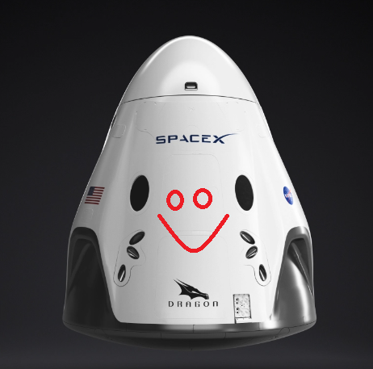

Hiperblog
Your fist option in blogs
Este es el titulo atractivo e interesante del post
Y este es el párrafo de inicio donde vamos a explicar las cosas increíbles que se pueden hacer con ramas

Los blogs son la mejor forma de compartir informacion y tus ideas. Mucho mas que ir a conferencias o salir en Youtueb. Excepto si eres rockstar. Pero Estadisticamente no lo eres... por ahora.
Suscribete y dale Like